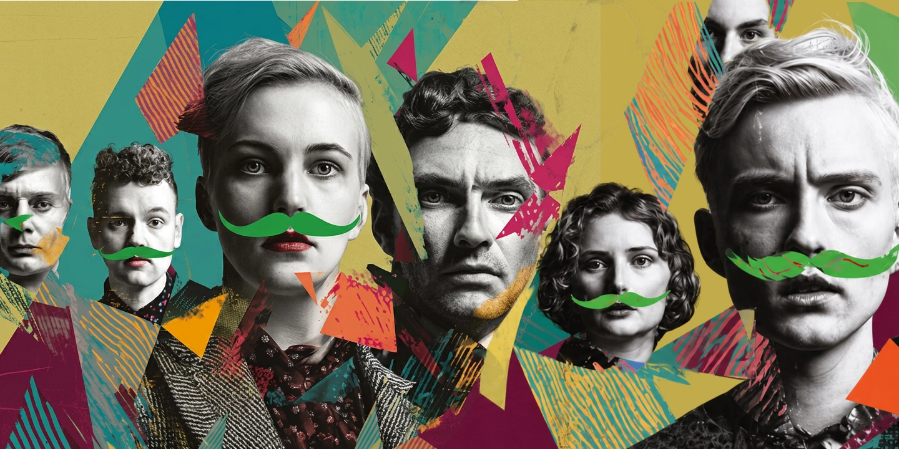

Residency programme
Time, care and resources to make the work
The frame
18 residencies across three years
The PERFORMA-Q residency is a laboratory for experimental and politically engaged performance — live art, choreography, expanded dramaturgy and hybrid forms that cross stage, visual arts, sound and digital media. Risk-taking is the point: process, research and collective reflection are valued as much as finished results.
Each residency offers dedicated time and space for research and creation, access to shared rehearsal or work facilities, and guidance from mentors or invited guests, depending on project needs. Residents are connected to local partners, peers and networks — with opportunities for work-in-progress sharings, public presentations, or support toward future production.
Who it is for
Voices from the periphery, centred
We welcome performing artists, directors, playwrights and collectives — emerging and established — whose practice is connected to Europe's periphery and its social, cultural or political realities, including artists based elsewhere whose work meaningfully engages with them.
The programme centres artists who navigate racialized, migrant, working-class, trans, disabled and other intersecting experiences of exclusion — not only as themes, but through the way projects are made, shared and organised.
Especially welcome: projects that trace minoritized lineages, reclaim forgotten archives, or speculate on alternative queer worlds; work engaging memory, loss, care and resilience; new dramaturgies that blur fiction and documentary, rework popular or folk forms, or question who is allowed to speak and be seen.
Basic accessibility support can be discussed with selected residents within available resources.
Cycle 1 at a glance
October 2026 – April 2027
| Applications close | 31 July 2026 · complete applications only |
|---|---|
| Residency period | October 2026 – April 2027 |
| You submit | Project description · motivation statement · portfolio or documentation links · short CVs for key collaborators |
| Selection weighs | Artistic quality · clarity of intent · feasibility within the framework · relevance to the programme's focus |
| Hosted by | Partner organisations across the consortium, matched to project needs |